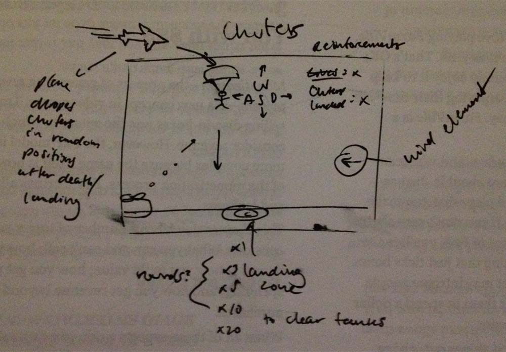
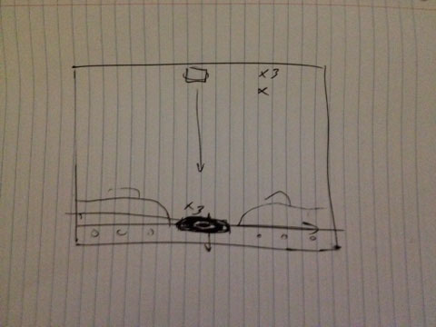

Chuters
High Concept
The goal of the game is to safely land as many parachuters (or "chuters") as you can on the target below before running out of reinforcements. If your chuter misses the target or is shot down, you will lose a life (called "reinforcements"). Obstacles such as enemy tank fire and dynamic wind elements will make this challenge increasingly difficult until the player fails. To add more depth to the game, a chain reaction element will be incorporated--if a player can successfully land a specified number of chuters in a row, they will trigger a bombing run and blow up the enemies on the ground. This is an unwinnable, never-ending game that challenges players to attain higher scores.
Genre
Chuters is a blend of the chain reaction and avoidance game genres.
Platform
We are initially targeting the desktop platform.
Story
There is no specific story in Chuters as the players are only trying to land as many "chuters" as they can and the game continues.
Players must avoid incoming enemy fire to succeed, and successfully landing "chuters" consecutively will generate rewards for the player.
Esthetics
We will be using 8-bit pixel art graphics for the game.
There will be ambient background music that is not too slow.
Some of the types of sound will include:
- score on landing
- battle sounds
Gameplay
Mechanics
The player will have to decide on the fly which direction to fall and possibly how fast. The player will be avoiding bullets while trying to safely land on a specific point.
Control
- Keyboard arrows for movement
- Possible other keys for rewards or power-ups (will update when decided)
Onboarding and Teaching the game
The basic controls will be initially displayed to the user.
Player learning
The player will need to learn what to avoid to make a safe landing.
Screenshots
 Other
Nothing to add here. Chuters will be coded from scratch without using external libraries.
About the developers
Derrick Hunt is a game design and development major, journalism minor. He is skilled with game programming and graphic asset creation. This will be the second game he has created using HTML canvas and JavaScript.
Chad Karon is a Game Design and Development major. He is a proficient programmer and this will be the third game he has helped create using HTML canvas and JavaScript.